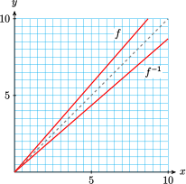

Section 5.1 Section 5.1 Inverse Functions
Subsection 1. Use new vocabulary
Subsubsection Definitions
Write a definition or description for each term:
- Inverse function
- Inverse function notation
- Horizontal line test
- One-to-one function
- Symmetric about \(y=x\)
Subsubsection Exercise
Notebook 5.1.
Illustrate each term above for the following situation:
The sales tax \(T\) on an item that costs \(p\) dollars is given by the function \(T=f(p)=1.15p\)
- The inverse function gives the price \(p\) of an item whose sales tax is \(T\) dollars.
- \(\displaystyle p=f^{-1}(T)\)
- The graph of \(T=f(p)=1.15p\) is linear, and so passes the horizontal line test.
- A function that passes the horizontal line test is one-to-one: for each value of \(p\) there is only one value of \(T\text{,}\) and vice versa.
- 
Subsection 2. Solve an equation for a variable
Subsubsection Examples
Example 5.2.
Solve \(~y=\sqrt{x^3-4}~\) for \(x\) in terms of \(y\text{.}\)
Example 5.3.
Solve \(~y=\dfrac{x+1}{x-2}~\) for \(x\) in terms of \(y\text{.}\)
Subsubsection Exercises
Notebook 5.4.
Solve \(~y=5-4\sqrt{x+2}~\) for \(x\) in terms of \(y\text{.}\)
Notebook 5.5.
Solve \(~y=\dfrac{3}{\sqrt[3]{x+6}}~\) for \(x\) in terms of \(y\text{.}\)
Notebook 5.6.
Solve \(~y=(2x-3)^3+1~\) for \(x\) in terms of \(y\text{.}\)
Notebook 5.7.
Solve \(~y=\dfrac{3x-1}{2x+1}~\) for \(x\) in terms of \(y\text{.}\)
Subsection 3. Use function notation
Subsubsection Examples
Example 5.8.
\(f(x)=2x-3~\text{.}\) Find formulas for:
- \(\displaystyle g(x)=\dfrac{1}{f(x)}\)
- \(\displaystyle h(x)=-f(x)\)
- \(\displaystyle j(x)=f^{-1}(x)\)
- \(\displaystyle g(x)=\dfrac{1}{2x-3}\)
- \(\displaystyle h(x)=3-2x\)
- \(\displaystyle j(x)=\dfrac{x+3}{2}\)
Example 5.9.
\(f(x)=\sqrt[3]{x-4}~\text{.}\) Find formulas for:
- \(\displaystyle g(x)=\dfrac{1}{f(x)}\)
- \(\displaystyle h(x)=-f(x)\)
- \(\displaystyle j(x)=f^{-1}(x)\)
- \(\displaystyle g(x)=\dfrac{1}{\sqrt[3]{x-4}}\)
- \(\displaystyle h(x)=-\sqrt[3]{x-4}\)
- \(\displaystyle j(x)=x^3+4\)
Subsubsection Exercise
Notebook 5.10.
\(f(x)=2-\dfrac{1}{2}x~\text{.}\) Find formulas for:
- \(\displaystyle g(x)=\dfrac{1}{f(x)}\)
- \(\displaystyle h(x)=-f(x)\)
- \(\displaystyle j(x)=f^{-1}(x)\)
- \(\displaystyle g(x)=\dfrac{2}{4-x}\)
- \(\displaystyle h(x)=\dfrac{1}{2}x-2\)
- \(\displaystyle j(x)=4-2x\)
Notebook 5.11.
\(f(x)=\dfrac{1}{x+2}~\text{.}\) Find formulas for:
- \(\displaystyle g(x)=\dfrac{1}{f(x)}\)
- \(\displaystyle h(x)=-f(x)\)
- \(\displaystyle j(x)=f^{-1}(x)\)
- \(\displaystyle g(x)=x+2\)
- \(\displaystyle h(x)=\dfrac{-1}{x+2}\)
- \(\displaystyle j(x)=f^{-1}(x)\)
Notebook 5.12.
\(f(x)=x^{3/4}~\text{.}\) Find formulas for:
- \(\displaystyle g(x)=\dfrac{1}{f(x)}\)
- \(\displaystyle h(x)=-f(x)\)
- \(\displaystyle j(x)=f^{-1}(x)\)
- \(\displaystyle g(x)=x^{-3/4}\)
- \(\displaystyle h(x)=-x^{3/4}\)
- \(\displaystyle j(x)=x^{4/3}\)
Notebook 5.13.
\(f(x)=\sqrt[3]{x-4}~\text{.}\) Find formulas for:
- \(\displaystyle g(x)=\dfrac{1}{f(x)}\)
- \(\displaystyle h(x)=-f(x)\)
- \(\displaystyle j(x)=f^{-1}(x)\)
- \(\displaystyle g(x)=\dfrac{1}{\sqrt[3]{x-4}}\)
- \(\displaystyle h(x)=-\sqrt[3]{x-4}\)
- \(\displaystyle j(x)=x^3+4\)